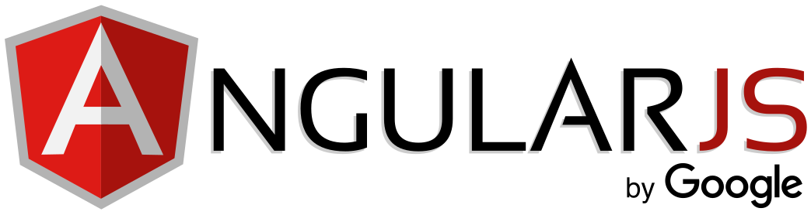

Exploring Front-End Development Languages: Building the Digital Interface
In the ever-evolving landscape of web development, front-end development languages play a pivotal role in crafting the visual and interactive components of websites and web applications. These languages serve as the cornerstone of user experiences, enabling developers to create stunning interfaces that captivate users while ensuring seamless interaction. This article delves into the realm of front-end development languages, exploring their characteristics, use cases, and significance in modern web development.
Front-end development, also known as client-side development, involves the creation of the user interface and user experience elements of a website or web application. This includes everything that users see and interact with directly in their browsers, from layouts and typography to buttons and animations.
Front-end development languages are responsible for translating design concepts into functional and interactive web elements. These languages empower developers to breathe life into static designs, delivering a dynamic and engaging online experience. As technology advances and user expectations rise, the need for sophisticated front-end development languages becomes increasingly critical.
Top Front End Technologies
1. HTML (Hypertext Markup Language)
HTML serves as the foundation of every web page. It provides the structural framework for content, defining headings, paragraphs, images, links, and other elements. HTML5, the latest version, introduces a host of new features and APIs that enable enhanced multimedia support, improved semantics, and responsive design.
HTML stands for HyperText Markup Language. It is used to design the web pages. With the help of HTML, you can create a complete website structure. HTML is the combination of Hypertext and Markup language. Hypertext defines the link between the web pages and markup language defines the text document within the tag that define the structure of web pages.
2. CSS (Cascading Style Sheets)
CSS complements HTML by controlling the presentation and styling of web content. It dictates how elements are displayed, specifying attributes like colors, fonts, spacing, and layout. CSS3 brings advanced capabilities such as animations, transitions, and media queries for responsive design.
CSS is among the core languages of the open web and is standardized across Web browsers according to W3C Specifications. Previously, the development of various parts of CSS specification was done synchronously, which allowed the versioning of the latest recommendations. You might have heard about CSS1, CSS2.1, or even CSS3. There will never be a CSS3 or a CSS4; rather, everything is now CSS without a version number.
3. JavaScript

JavaScript is a dynamic and versatile programming language that enables interactivity and behavior on web pages. It empowers developers to create responsive features like form validation, real-time updates, and complex animations. Frameworks like React, Angular, and Vue.js built on top of JavaScript facilitate the development of robust, interactive user interfaces.
JavaScript (js) is a light-weight object-oriented programming language which is used by several websites for scripting the webpages. It is an interpreted, full-fledged programming language that enables dynamic interactivity on websites when applied to an HTML document. It was introduced in the year 1995 for adding programs to the webpages in the Netscape Navigator browser. Since then, it has been adopted by all other graphical web browsers. With JavaScript, users can build modern web applications to interact directly without reloading the page every time. The traditional website uses js to provide several forms of interactivity and simplicity.
4. TypeScript
TypeScript is a superset of JavaScript that introduces static typing, enhancing code quality and maintainability. It compiles to JavaScript, providing developers with better tooling and catching potential errors during development.It is a free and open-source high-level programming language developed by Microsoft that adds static typing with optional type annotations to JavaScript.
TypeScript is designed for the development of large applications and transpiles to JavaScript. Because TypeScript is a superset of JavaScript, all JavaScript programs are syntactically valid TypeScript, but they can fail to type-check for safety reasons.TypeScript may be used to develop JavaScript applications for both client-side and server-side execution (as with Node.js or Deno). Multiple options are available for transpilation. The default TypeScript Compiler can be used, or the Babel compiler can be invoked to convert TypeScript to JavaScript.
5. Angular.js
AngularJS is an open-source Javascript front-end framework and is an integral part of the MEAN stack (MongoDB, Express.js, Angular, And Node.js). It is mostly used for developing single-page web applications (SPAs). Since it’s a flexible framework, developers can create progressive web apps or integrate the framework with technologies such as Ionic, Cordova, or NativeScripy to design near-native mobile applications.
The tool has inbuilt templates that make it easy for developers to build UI views quickly. AngularJS provides simple, fast data binding without developer intervention. By supporting caching, it reduces the CPU’s workload. It provides fast loading and less navigation, ensuring an effective user experience. Gmail, Forbes, Upwork, Deutsche Bank, etc., are some of the popular websites and applications built using Angular.js.
6. React.js
ReactJS, also known as React, is a well-known open-source JavaScript front-end library for creating dynamic and interactive applications and improving UI/UX design. Basically, it’s responsible only for the view layer. Facebook initially developed and maintained the technology, which was then used in some of its products, such as Instagram and WhatsApp. With frameworks such as Next.js, React can be utilized for developing single-page, mobile, or server-side applications. It allows code to be debugged more efficiently by separating it into components.
More than 220,000 websites currently utilize React. A few of the giants that use this platform for their applications/websites include Apple, PayPal, BBC, Dropbox, Reddit, and Netflix.
7. Vue.js

The popular Javascript framework ‘Vue.js’ was created by Evan You and used to develop interactive UIs (User Interfaces) (UIs) and SPAs (Single-page applications). Vue.js is one of the best JavaScript frameworks for creating a lightweight and adaptable interactive UI elements. The MVVM model (Model View-View Model) architecture pattern and its lightweight nature make Vue.js extremely easy to implement.
HTML and CSS knowledge is required to use Vue.js. Also, Vue.js has a core library focused solely on the view layer. Frameworks like this can be seamlessly integrated into big projects for front-end development without causing any problems or issues. 9GAG, GitLab, Nintendo, Behance, and Laravel are some of the popular websites and applications built using Vue.js.
8. jQuery
Introduced in 2006, jQuery is one of the earliest frontend frameworks. Despite its launch date, what makes it stand out is its relevance even in today’s tech world. Not only does jQuery offer simplicity and ease to use, but it also minimizes the need to write extensive JavaScript codes. Thanks to its existence for years, there is a considerable jQuery community for the solutions. Fundamentally a library, jQuery is used to manipulate CSS and DOM and to optimize the functionality and interactivity of a website.
Though we weren’t able to build mobile apps with jQuery, recent developments in jQuery Mobile, the usage boundaries have been expanded. What’s more, the recent development in this framework enables developers to build native mobile applications with its HTML5-based UI system–jQuery Mobile. Besides, jQuery is browser-friendly and supports any browser you intend to use.
Conclusion
In conclusion, front-end development languages are the building blocks of captivating and interactive user interfaces on the web. HTML, CSS, JavaScript, TypeScript, and preprocessors all contribute to crafting memorable online experiences. As technology advances, developers must stay attuned to emerging trends and choose the right combination of languages to create modern, user-centric web interfaces.
Whether you're an aspiring front-end developer or an industry veteran, understanding these languages and their evolving roles is essential for shaping the digital landscape of the future.